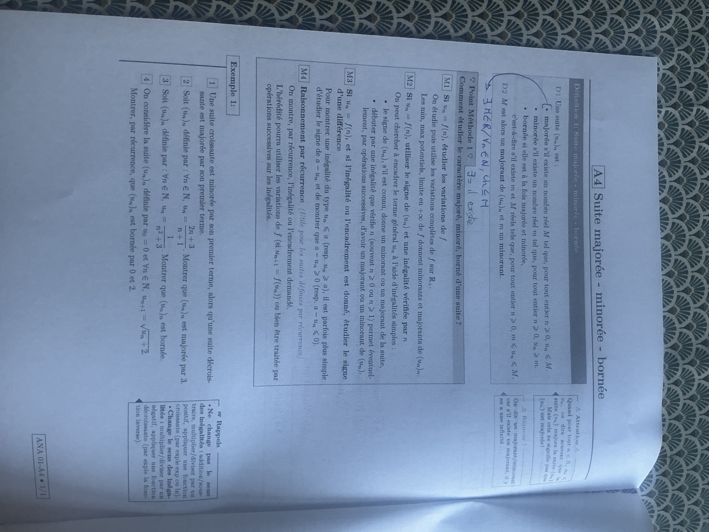

1 — Une borne donnée par le premier terme
Une suite croissante est minorée par son premier terme, alors qu’une suite décroissante est majorée par son premier terme.
Trouver des bornes valables à tous les rangs et rédiger une preuve par inégalités ou par récurrence. Les quatre cas du polycopié sont corrigés pas à pas, sans calculatrice.
La photographie conserve la mise en page, les remarques marginales et les annotations manuscrites.

Une suite \((u_n)_n\) est :
\(M\) est alors un majorant de \((u_n)_n\) et \(m\) un minorant.
L’annotation « \(\exists\) = il existe » accompagne la définition. Le symbole \(\forall\) signifie « pour tout ».
Le nombre \(M\) est fixe : il ne dépend pas de \(n\). Il doit être au-dessus de tous les termes. De même, un minorant est au-dessous de tous les termes. Pour une suite qui commence au rang 1, on demande ces inégalités pour tout \(n\ge1\).
Un majorant n’est pas forcément une valeur atteinte par la suite, ni sa limite. Un minimum ou un maximum, lui, doit être atteint par un terme.
Quand \(u_n\le v_n\) pour tout \(n\), on dit souvent que la suite \((v_n)_n\) majore la suite \((u_n)_n\). Cela ne signifie pas que \((u_n)_n\) est majorée.
Par exemple, \(n\le n+1\), mais la suite \(u_n=n\) n’a pas de majorant réel : quel que soit \(M\), on peut choisir un entier \(n>M\). En revanche, si l’on sait aussi que \(v_n\le M\) avec \(M\) fixe, alors \(u_n\le M\).
On dit un majorant ou un minorant, car s’il en existe un, il y en a une infinité. Si 3 est un majorant, 4, 5 et tout réel supérieur à 3 le sont aussi. Si 0 est un minorant, tout réel inférieur à 0 l’est aussi.
On étudie puis utilise les variations complètes de \(f\) sur \(\mathbb R_+\). Les minimums, maximums potentiels et la limite en \(+\infty\) de \(f\) donnent des minorants et majorants de la suite.
Le tableau complet doit justifier l’encadrement de \(f\) sur l’intervalle utile. Une limite seule ne dit pas si les termes sont au-dessus ou au-dessous d’elle. Si \(m\le f(x)\le M\) pour tout \(x\ge0\), on prend \(x=n\) pour obtenir \(m\le u_n\le M\). Si la suite commence à \(n_0\), on utilise \([n_0,+\infty[\).
On peut chercher à encadrer le terme général \(u_n\) à l’aide d’inégalités simples :
Si tous les termes sont positifs ou nuls, 0 est un minorant. Si tous les termes sont négatifs ou nuls, 0 est un majorant. Le signe seul ne fournit donc qu’un côté de l’encadrement.
Si \(u_n=f(n)\), et si l’inégalité ou l’encadrement est donné, on peut étudier le signe d’une différence.
Pour montrer \(u_n\le a\), ou respectivement \(u_n\ge a\), il est parfois plus simple d’étudier le signe de \(a-u_n\) et de montrer \(a-u_n\ge0\), ou respectivement \(a-u_n\le0\).
Si l’énoncé demande « majorée par 3 », on essaie de simplifier \(3-u_n\). On doit obtenir une expression positive ou nulle à tous les rangs. Pour une borne, on compare un terme à une constante ; pour les variations de A3, on comparait deux termes consécutifs.
On montre par récurrence l’inégalité ou l’encadrement demandé.
L’hérédité peut utiliser les variations de \(f\), si \(u_{n+1}=f(u_n)\), ou être traitée par des opérations successives sur les inégalités.
On vérifie l’encadrement au premier rang. Puis on suppose qu’il est vrai à un rang \(n\) et on démontre qu’il est encore vrai au rang \(n+1\), en utilisant la relation de récurrence. On termine par une conclusion pour tout \(n\).
Les numéros M1 à M4 sont propres à chaque fiche : ici, M4 désigne la récurrence, alors que dans A3, M4 désignait la fonction associée.
La fonction appliquée doit être définie et monotone sur un intervalle contenant les nombres comparés. Le logarithme exige des nombres strictement positifs. Pour l’inverse, on reste dans \(]0,+\infty[\) ou dans \(]-\infty,0[\) : on ne traverse pas 0.
Pour l’exercice avec la racine carrée, on utilise sa croissance sur \([0,+\infty[\) :
Ces règles suffisent pour toutes les corrections ci-dessous : aucune valeur décimale approchée n’est nécessaire.
Les énoncés sont conservés. Chaque preuve utilise uniquement des valeurs exactes.
Une suite croissante est minorée par son premier terme, alors qu’une suite décroissante est majorée par son premier terme.
Cas d’une suite croissante. Si elle commence à \(u_0\), les termes vérifient :
Donc, pour tout \(n\in\mathbb N\), \(u_n\ge u_0\). Le nombre fixe \(u_0\) est un minorant de la suite.
Cas d’une suite décroissante. De même :
Donc, pour tout \(n\in\mathbb N\), \(u_n\le u_0\). Le nombre fixe \(u_0\) est un majorant de la suite.
Si la suite commence par \(u_1\), on remplace \(u_0\) par \(u_1\) et on raisonne pour \(n\ge1\).
Attention : cela ne prouve qu’une seule borne. Une suite croissante peut ne pas être majorée, comme \(u_n=n\).
Montrer que \((u_n)_n\) est majorée par 3.
1. Traduire l’objectif. On veut prouver \(u_n\le3\) pour tout \(n\), c’est-à-dire \(3-u_n\ge0\).
2. Mettre au même dénominateur. Soit \(n\in\mathbb N\). Comme \(n+1\ge1>0\), toutes les fractions suivantes sont définies :
3. Justifier le signe. Le numérateur \(n\) est positif ou nul et le dénominateur \(n+1\) est strictement positif. Ainsi \(n/(n+1)\ge0\).
Conclusion : \(3-u_n\ge0\), donc \(u_n\le3\) pour tout \(n\in\mathbb N\). La suite est majorée par 3. L’égalité est atteinte pour \(n=0\), puisque \(u_0=3\).
On peut réécrire le numérateur : \(2n+3=2(n+1)+1\). Donc :
Comme \(n+1\ge1>0\), le passage aux inverses donne \(0<1/(n+1)\le1\). En ajoutant 2 :
On obtient même deux bornes : 2 est un minorant et 3 un majorant. Pour répondre à l’énoncé, la seule preuve de \(u_n\le3\) suffit.
Montrer que \((u_n)_n\) est bornée.
1. Trouver un minorant. Pour tout \(n\in\mathbb N\), \(n^2\ge0\), donc \(n^2+3\ge3>0\). Son inverse est strictement positif :
Ainsi, 0 est un minorant.
2. Trouver un majorant. On reprend \(n^2+3\ge3>0\). La fonction inverse est décroissante sur les nombres strictement positifs : le sens de l’inégalité s’inverse.
Ainsi, \(1/3\) est un majorant.
Conclusion : pour tout \(n\in\mathbb N\),
La suite est minorée par 0 et majorée par \(1/3\) : elle est donc bornée. On conserve la fraction \(1/3\), qui est une valeur exacte.
Le majorant \(1/3\) est atteint au rang 0. Le minorant 0 n’est jamais atteint : un minorant n’a pas besoin d’être un terme de la suite.
Montrer, par récurrence, que \((u_n)_n\) est bornée par 0 et 2.
1. Énoncer la propriété. On veut montrer, pour tout \(n\in\mathbb N\), la propriété :
2. Initialisation au rang 0. On sait que \(u_0=0\), donc \(0\le u_0\le2\). La propriété \(P(0)\) est vraie.
3. Hérédité. Soit \(n\in\mathbb N\). On suppose \(P(n)\) vraie, autrement dit :
On veut obtenir un encadrement de \(u_{n+1}=\sqrt{u_n+2}\). On suit donc les opérations de la formule, dans l’ordre.
On ajoute 2 aux trois membres, ce qui conserve le sens :
En particulier, \(u_n+2\ge0\) : sa racine carrée existe, donc \(u_{n+1}\) est bien défini. La racine carrée est croissante sur \([0,+\infty[\), donc :
En utilisant la relation de récurrence et \(\sqrt2\ge0\), on obtient :
C’est exactement \(P(n+1)\). L’hérédité est établie.
4. Conclusion. Par récurrence, pour tout \(n\in\mathbb N\), \(u_n\) est bien défini et \(0\le u_n\le2\). La suite est donc minorée par 0 et majorée par 2, donc bornée.
Sans calculatrice : il suffit de savoir que \(\sqrt2\ge0\) et que \(\sqrt4=2\). Il n’y a aucune raison de chercher une valeur approchée de \(\sqrt2\).
On ne suppose pas l’encadrement vrai à tous les rangs : on le suppose à un rang \(n\) pour démontrer le passage au rang suivant. L’initialisation permet ensuite de répéter ce passage indéfiniment.
Calculer seulement \(u_1=\sqrt2\) et \(u_2=\sqrt{\sqrt2+2}\) ne prouverait pas l’encadrement pour tous les rangs. C’est la récurrence qui le prouve.
Enfin, \(\sqrt{u_n+2}\) ne se sépare pas en \(\sqrt{u_n}+\sqrt2\). On applique la racine à toute l’expression.
| Situation | Idée décisive | Conclusion |
|---|---|---|
| Suite croissante ou décroissante | Comparer chaque terme au premier | Croissante : minorée par \(u_0\). Décroissante : majorée par \(u_0\). |
| \(u_n=(2n+3)/(n+1)\) | \(3-u_n=n/(n+1)\ge0\) | Majorée par 3 |
| \(u_n=1/(n^2+3)\) | \(n^2+3\ge3>0\), puis inverses | \(0<u_n\le1/3\) : bornée |
| \(u_{n+1}=\sqrt{u_n+2}\), \(u_0=0\) | Récurrence : ajouter 2, puis prendre la racine | \(0\le u_n\le2\) : bornée |
A1 — Notations · A2 — Graphiques · A3 — Variations · Chapitre 6 — Bornes · Tous les cours prépa de maths.